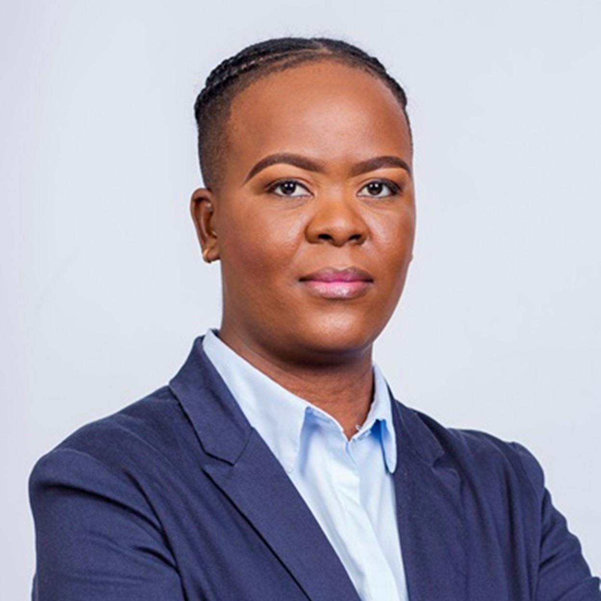

The Board of Directors provides strategic leadership, independent oversight and sound corporate governance to ensure Mmathari Partners achieves sustainable growth while maintaining the highest standards of integrity, accountability and responsible investment.
Master of Tax Law (University of Sydney, Australia)
Bachelor of Commerce - Accounting (University of Botswana, Botswana)
BURS Leadership Development
Programme (University of Stellenbosch Business School, South Africa)
HM Revenue and Customs Senior Leadership Programme (Commonwealth Association of
Tax Administrators (CATA), UK).
Over 30 years' experience as a seasoned tax professional with extensive local, regional and international expertise in both domestic and international taxation at policy and operational levels.
Currently serves as Consultant Director at Finite Consulting, providing tax advisory services. Previously held senior leadership positions at Botswana Unified Revenue Service (BURS), the Commonwealth Association of Tax Administrators (CATA), London, and the Southern African Development Community (SADC).
He has extensive board experience, having served on the boards of Statistics Botswana and the IFSC Certification Committee, while also contributing to technical working committees at SADC, ATAF and the OECD.
B. Applied Finance (Macquarie University,
Australia)
MSc Finance (Warwick Business
School, UK)
FMVA, (Corporate Finance Institute, Canada)
Post Graduate Program
in Data Science and Business Analytics
(PGP-DBSA, McCombs Business School, USA).
With over 18 years' experience within asset management, private equity and debt, and development finance, Refilwe provides strategic leadership, responsible for shaping the overall company and investment strategy, performance, governance, and sustainability of Mmathari Partners..
Formerly an Associate Partner at a Private Equity firm. Previously, she was a Senior Investment Officer at Botswana Development Corporation (BDC) - Botswana's largest DFI; Norsad Capital - a sub-Saharan Africa-based impact investor and private credit provider; and Botswana Insurance Fund Management (BIFM) - Botswana's largest fund manager by assets under management.
Refilwe has covered transactions across Botswana, Namibia, Mozambique, Tanzania, Zambia and Zimbabwe. She has board experience covering reinsurance, healthcare, education and life insurance, and currently serves as Board Chair of Liberty Life Botswana.

Bachelor of Finance
(University of Botswana)
CFA Charterholder
(CFA Institute, USA)
Mezzanine Finance
(International Faculty of Finance, UK)
and other professional courses
in financial modelling.
Keboetswe oversees the investment team and leads the implementation of the Firm’s investment strategy. She is responsible for sourcing, evaluating, executing, and monitoring investment opportunities, bringing more than 10 years of end-to-end investment management experience across the Africa region.
Prior to co-founding Mmathari, Keboetswe served as an Associate Regional Representative at US-based impact fund manager Developing World Markets (DWM), where she was responsible for investments across Africa and the Middle East. Before joining DWM, she held investment management roles at Norsad Capital, focusing on the structuring and deployment of private debt transactions throughout Sub-Saharan Africa. She has structured and managed debt, mezzanine and quasi-equity investments across all stages of the investment cycle. Her experience spans a diverse range of sectors and business maturities, from early-stage start-ups to mature businesses.
Keboetswe holds a Bachelor of Finance degree (first class) from the University of Botswana and is a CFA Charterholder.
BA Global;
Postgraduate Diploma in Business
Administration,
(University of Derby, UK)
Postgraduate Certificate in the
Mechanics of Private Equity (University of Middlesex, UK)
BA in Biology and Environmental
Science (University of Botswana, Botswana)
Various professional courses
in banking, leadership and
investments.
Over 20 years' experience in banking, portfolio management, credit and portfolio risk management with a strong track record in the financial services sector.
Previously worked for Norsad Capital, Standard Chartered Bank, Barclays Bank and First National Bank Botswana. She currently serves as Deputy Director, CCIB Credit, at First National Bank Botswana.
She also has board experience, having previously served on the board of Lecha Administration (NMG).
Association of Chartered Certified
Accountants (ACCA, UK)
Bachelor of Accounting Science
(UNISA, South Africa)
Certificate of Proficiency (COP).
Over 18 years' progressive and diverse experience spanning external audit at a Big Four firm, senior finance and internal audit roles across Botswana, the United States and the United Kingdom.
Worked for various organisations including PricewaterhouseCoopers (PwC) Botswana and the United Kingdom, and later served as Chief Operations Manager at Stanlib Investment Management Services Botswana.
Currently serves as Chief Audit Executive at the Motor Vehicle Accident Fund, Botswana. Previous board experience includes Babereki Insurance Brokers and serving as Vice Chairperson of the ACCA Botswana Chapter Panel Committee.
The Board of Directors is committed to maintaining the highest standards of corporate governance, ethical leadership and accountability. Through prudent oversight and strategic guidance, the Board supports Mmathari Partners in delivering sustainable financial performance, measurable impact and enduring value for investors, portfolio companies and the communities in which we operate.